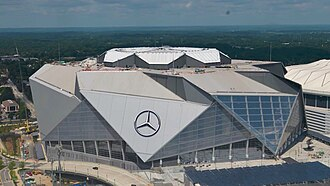
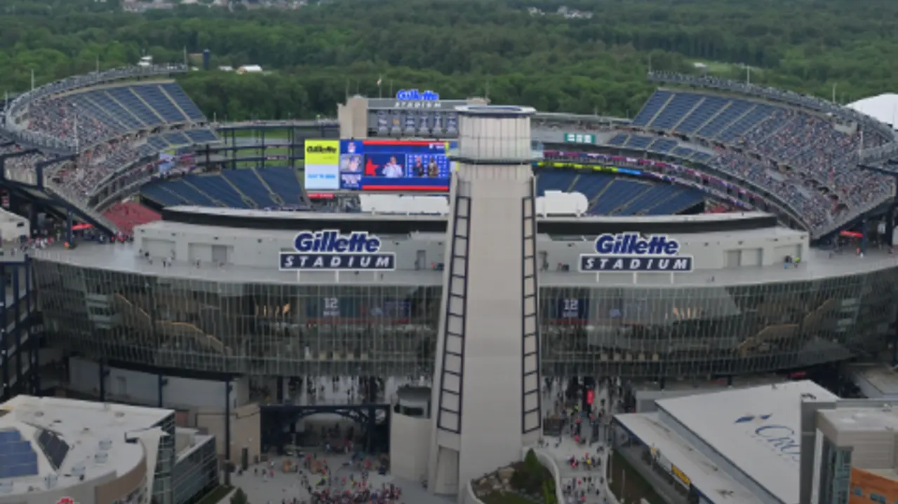
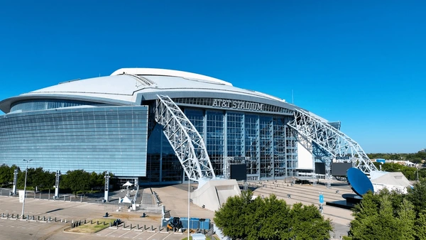
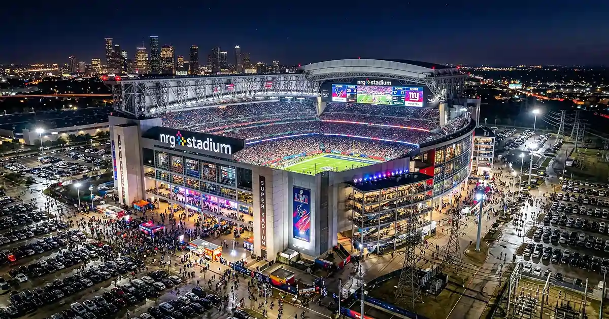
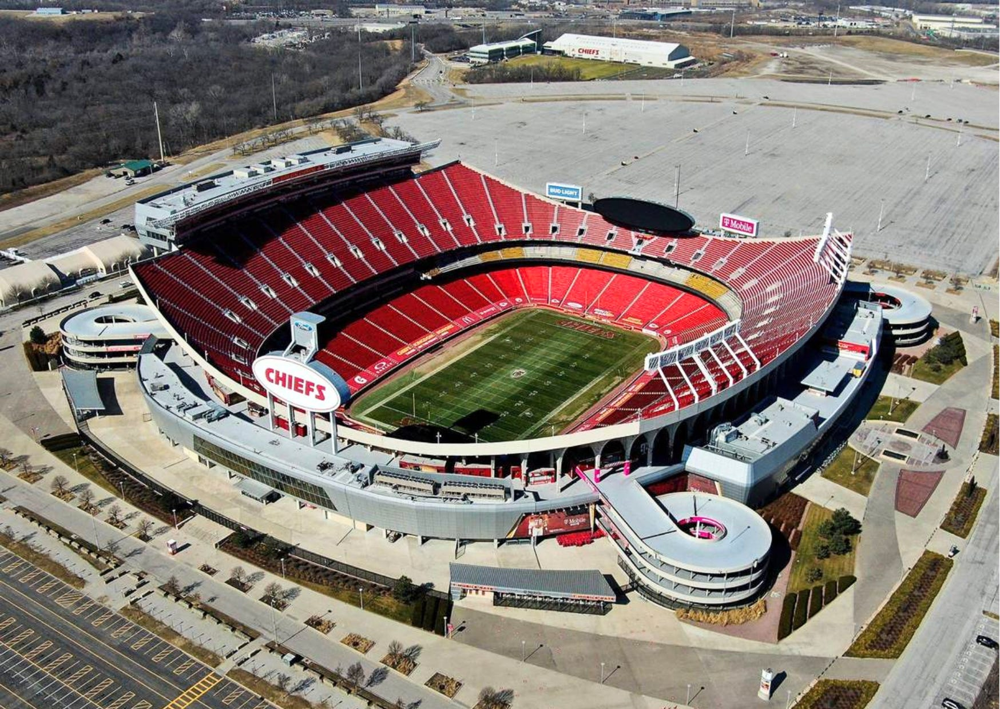
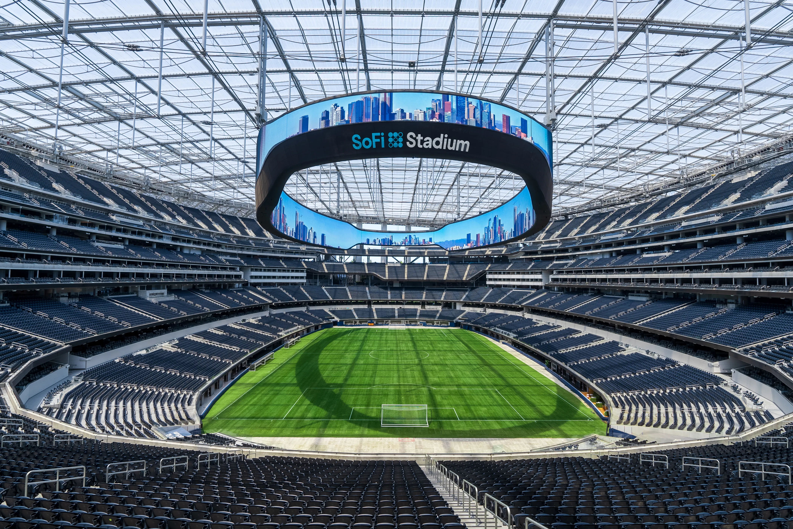
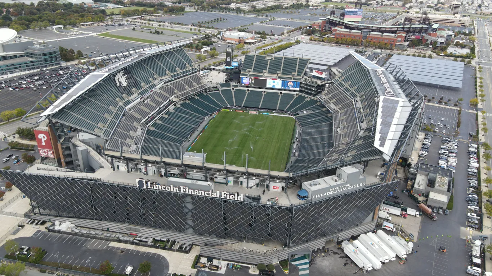
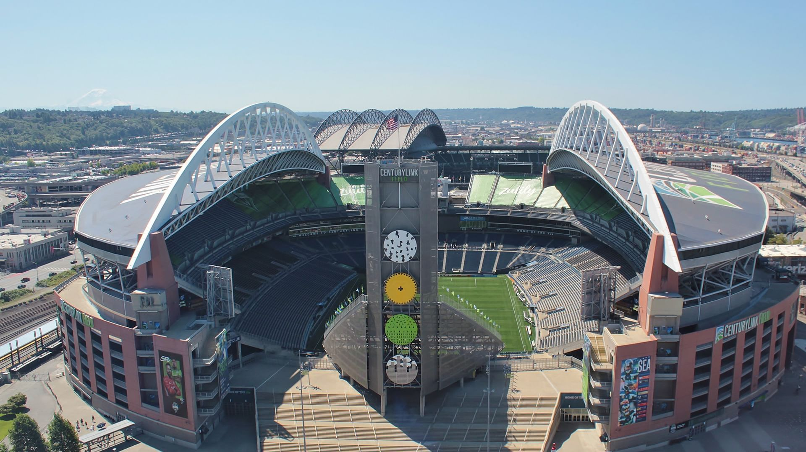

Copa do mundo 2026
Países Sedes

Estados Unidos

México

Canadá
×
Crie sua Conta de Torcedor
Receba alertas de jogos, notícias exclusivas e monte seu álbum online!
Estados Unidos

Cultura
- O Estados Unidos é a nação mais influente do mundo, tendo relações com quase todos os países do mundo. O país possuí uma grande variedade cultural, por ele ser um grande atrativo para imigrantes, que estão em busca por uma melhoria de vida. Um dos principais aspectos da sua cultura é o individualismo e patriotismo, sendo possível encontra sua bandeira em diversos lugares do seu território.
Estádios
- Estádio de Atlanta

- Localizado em Atlanta, no estado da Georgia, foi inaugurado em 2017 para substituir o estádio Georgia Dome.
- Estádio de Boston

- Localizado em Foxborough, no estado de Massachusetts, foi inaugurado em 2002 para se a casa dos times New England Patriots e New England Revolution.
- Estádio de Dallas

- Localizado em Arligton, no estado do Texas, foi inaugurado em 2009 para ser a nova casa do time Dallas Cowboys.
- Estádio de Houston

- Localizado em Houston, no estado de Texas, foi inaugurado em 2002 para superar o clima da cidade.
- Estádio de Kansas City

- Localizado em Kansas City, no estado de Missouri, foi inaugurado em 1972 para ser a nova casa do time Kansas City Chiefs.
- Estádio de Los Angeles

- Localizado em Inglewood, no estado da Califórnia, foi inaugurado em 2020 para ser a casa dos times Los Angeles Rams e Los Angeles Chargers.
- Estádio de Miami

- Localizado em Miami Gardens, no estado da Flórida, foi inaugurado em 1987 para abrigar o time Miami Dolphins.
- Estádio de Nova York e Nova Jersey
.jpg)
- Localizado East Rutherford, no estado de New Jersey, foi inaugurado em 2010 para substituir o Giants Stadium.
- Estádio de Filadélfia

- Localizado em Filadélfia, no estado da Pensilvânia, foi inaugurado em 2003 para substituir o Veterans Stadium.
- Estádio de São Francisco e área da Baía
.jpg)
- Localizado em Santa Clara, no estado da Califórnia, foi inaugurado em 2014 para substituir o Clandlestick Park.
- Estádio de Seattle

- Localizado em Seattle, no estado de New York City, foi inaugurado em 2002 para substituir o The Kingdome.